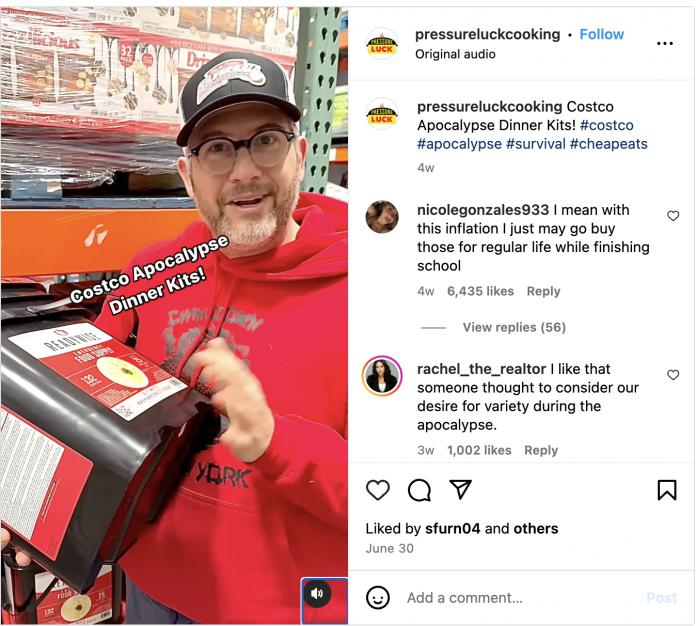

Costco又一项网红食品诞生了——末日全家桶！
上个月，有人在当地Costco门店看到了所谓的 “Costco末日晚餐套装！”，这段 Instagram 视频引起了 220 万次点击，火遍全网。
视频中出现的桶–ReadyWise 的应急食品供应–包含 132 份食物，里面有各种饭菜，如芝士通心粉和其他面食、米饭、汤、麦片、乳清牛奶替代品和香草布丁等。它还拥有 25 年的保质期。
但它真的能帮你度过紧急情况吗？
JM Nutrition 公司的注册营养师莫德-莫林（Maude Morin）说它真的可以。
莫林在周四接受加拿大CTV媒体采访时说：”我确实认为像末日桶这样的东西是很现实的。”当我们谈论营养和健康、理想的饮食时，前提条件是人们对目前的情况有一定的控制能力。因此，当我们在谈论应急准备时，我觉得不应该太注重百分之百的完美营养”。
莫林指出，尽管如此，这些食物的份量可能并不能满足家庭中每个人的需要。莫林说，女性通常每天摄入 1,600 至 2,000 卡路里，男性则摄入 2,300 至 3,000 卡路里，因此应急餐桶中的份量–似乎徘徊在六份左右–可能无法满足一个家庭中每个人的需要。
莫林说：”作为成年人，每人每餐可能要吃两份甚至三份才能真正满足他们的胃口。”
对于那些有某些过敏症或饮食限制的人来说，桶装食物可能也不是一个理想的解决方案。
“比如说，如果有人患有糖尿病，而他们又不能服用胰岛素或药物之类的东西，那么碳水化合物的摄入量可能会超过他们身体所能承受的范围。所以，我认为要考虑你自己独特的健康状况，看看是否符合要求，”莫林说。”无论是否属于紧急情况，我们都无法规避其中的一些饮食限制”。
不过，CTV联系了加拿大Costco，询问这些产品上架多久了，是否在加拿大门店有售，因为该产品似乎在加拿大只有网上出售。
此外，加拿大和美国出售的价格差异也很大，美国门店中销售的132份食物桶的价格为$62.99，在加拿大Costco官网只有56份和60份的，价格分别的$259.99和$184.99。单价相差8倍之多！
Costco Canada也有一些应急食品包在网上出售，宣传保质期为 30 年。
ReadyWise桶中包装的所有食品都是冻干或脱水的，该公司称，这不仅使 “超长保质期 “成为可能，还有助于保持风味和营养价值。根据网上的准备说明，准备食物所需的水量不等，从乳清牛奶替代品的几汤匙到晚餐主菜的四杯开水都有。
在准备应急包时，加拿大红十字会建议每人每天至少准备一升水用于饮用，另外准备两升水用于清洁和个人卫生。卑诗省和阿尔伯塔省建议携带四升水。一升水相当于四杯多一点。
应急包中应准备哪些食物？
虽然加拿大红十字会没有说要在应急包中加入冻干或脱水食品，但它建议携带保质期长、打开后不需要扔进冰箱的食品。
莫林指出，Costco还提供单成分冻干食品，如鸡肉、碎牛肉、水果和蔬菜，供那些希望补充含有更多蛋白质、维生素和矿物质的现成套装的人选择。
莫林说：”还有一点是，如果我们有空间的话，我们可以在日常储藏室里使用一些东西，我们可以保留一些故事。”如果我们考虑用牛肉干来提供一点额外的蛋白质，或者番茄酱可以成为维生素和矿物质的来源，甚至果酱和果冻之类的东西，虽然（这些）含有糖分，（但）仍然是用水果制成的。”
莫林补充说，罐装金枪鱼、豆类、扁豆、豌豆和淡奶也是很好的选择，以备不时之需。
红十字会指出，经常留意最佳食用日期和保质期也很重要，以确保它们仍然可以安全食用。
红十字会在其关于如何制作应急包的指南中说：”在灾难期间，可能会停电数小时甚至数天，这意味着剩菜剩饭需要扔掉。”
该组织还建议携带花生酱、苹果酱、燕麦片、干果和肉类、混合食品、蛋白质棒、干麦片或格兰诺拉麦片以及即食罐头食品等不易变质的物品。联邦政府还建议携带即用婴儿配方奶粉、宠物食品和手持开罐器。